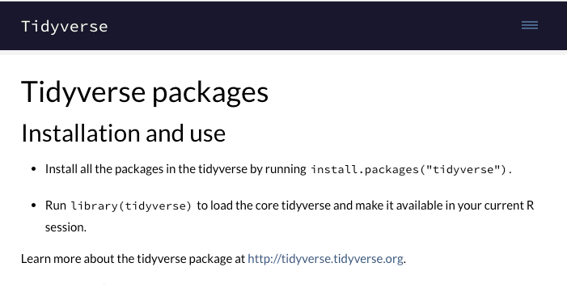
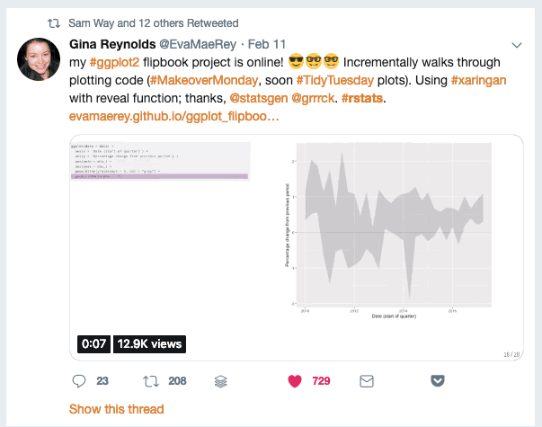

Training on Statistics and Data Analysis using R
Post Graduate Students, CPEB Club, University of Ibadan
2023-08-19
About me
I am an Agrometeorologist and Processed-Based Modeller
I am a mentor in the R4DS online learning community
I am also a active member of the TidyTuesday project
: @OluwafemOyedele üëç

My R journey (so far)

Learning Objectives
Installation of R and R Studio
Introduction to R and R Studio.
Data Import and Export
Data summary (Simple Descriptive analysis)
Data wrangling
Design of Experiment (CRD, RCBD, Latin Square Design, Split Plot Design and Alpha Latice Design).
Linear regression
Correlation
Learning Objectives Continued
Cluster analysis
PCA
Data Visualization
Communication (Report)
Installation
Install R and R Studio
- The first thing you need to do is download the R and R Studio software. Go to the (https://posit.co/download/rstudio-desktop/ and download the software for your operating system (Windows, Mac, or Linux).
RStudio Installation Cont.
What is R
A widely used programming language for data analysis
Based on statistical programming language S (1976)
Developed by Ross Ihaka & Robert Gentleman (1995)
Very active community, with many packages
Open source, and interoperable!
If one already knows Stata or similar software, why use R?
R is free, so you don’t need a terminal server
R has a very large community.
R can handle virtually any data format.
Analyses done using R are reproducible
Using R makes collaboration easier.
Finding answers to questions is much simpler in R
What is R Studio
Integrated Development Environment (IDE) for R that can make your life easier.
Founded by J.J. Allaire, available since 2010
Bloody useful! Let’s take a look: please open RStudio!
RStudio can:
organize your code, output, and plots.
Auto-complete code and highlight syntax.
Help view data and objects.
Enable easy integration of R code into documents.
Open R Studio
- We should see something like this

R Studio Interface
Demonstration
- Demontration on the various tabs found in R and R Studio.
Working Directly in R
Enter: 2 + 2
Hit return
View result
Your Turn
Open R
Use any mathematical operators (+, -, /, and *) to create an expression and make sure it works as expected
R Studio Projects
RStudio projects allow you to keep a collection of files all together, including:
R scripts
Quarto and Rmarkdown files (more on those soon)
Data files
And much more!
How to Create a Project
File -> New Project
Give the project a unique name
Set the directory where you want to put the project.
Quit RStudio, Double-click .Rproj file to reopen project
Your Turn
Create a new project (doesn’t matter if it’s in a new or existing directory
Quit RStudio, double-click the .Rproj file and reopen your project
Download Training Project
- Enter the following into the RStudio console pane:
- You’ll now have a copy of the project created for this training that we’ll use from here on out
File Types in R
There are two main file types that you’ll work with:
R scripts (.R)
Text is assumed to be executable R code unless you comment it
Quarto files (.qmd)
Text is assumed to be text unless you put it in a code chunk (more on this soon)

R Scripts
- Create new script file: File -> New File -> R Script

How to Run Code
- Run the code: control + enter on Windows, command + enter on Mac keystrokes or use Run button

How to Run Code Continuation
Note that you don’t have to highlight code.
You can just hit run anywhere on line to run code.
Packages
Packages add functionality that is not present in base R.
They’re where much of the power of R is found.

Packages We’ll Use

Packages We’ll Use

skimr
skimrprovides easy summary statistics.
Install Packages
- The syntax to install packages is as follows.
The package name must be in quotes.
Packages should be installed once per computer (i.e. once you’ve installed a package, you don’t need to do it again on the same computer).
Load Packages
- To load packages, use the following syntax:
Package names don’t need to be quoted here (though they can be).
Packages should be loaded once per session (i.e. every time you start working in R, you need to load any packages you want to use).
Your Turn
Open the project you downloaded before (it should be on your desktop)
Open the readme.md file
Install all the packages
Load the tidyverse and skimr packages using the library function
Data Science Workflow in R by (Hadley Wickham)

Data Import
To read in a csv file into R we will use
read_csvTo read in an excel file into R we will use
read_excelTo write a csv file to disc we will use
write_csvTo write a excel file to disc we will use
write_xlsxfromwritexl package
Data Import Practicals
Import
sorghum.xlsxinto RStudio and assigned it to an object calledsorghnum_dat.View the first 6 rows of the dataset.
Data Types
Double/Numeric (e.g. 2.5)
Character (e.g. “Male”)
Logical (e.g. “TRUE and FALSE”)
Tidy Data
- This is the consistent way of storing data in R

The Philosophy of Tidy Data
Data can be messy or tidy. Messy data can be in a number of different ways, but tidy data is any dataset where:
Each variable is a column; each column is a variable
Each observation is a row; each row is an observation
Each value is a cell; each cell is a single value
Tidy Data Example
Making Table3 to Tidy Data
# A tibble: 6 × 4
country year Cases Population
<chr> <dbl> <chr> <chr>
1 Afghanistan 1999 745 19987071
2 Afghanistan 2000 2666 20595360
3 Brazil 1999 37737 172006362
4 Brazil 2000 80488 174504898
5 China 1999 212258 1272915272
6 China 2000 213766 1280428583Data in column names
# A tibble: 6 × 79
artist track date.entered wk1 wk2 wk3 wk4 wk5 wk6 wk7 wk8
<chr> <chr> <date> <dbl> <dbl> <dbl> <dbl> <dbl> <dbl> <dbl> <dbl>
1 2 Pac Baby… 2000-02-26 87 82 72 77 87 94 99 NA
2 2Ge+her The … 2000-09-02 91 87 92 NA NA NA NA NA
3 3 Doors Do… Kryp… 2000-04-08 81 70 68 67 66 57 54 53
4 3 Doors Do… Loser 2000-10-21 76 76 72 69 67 65 55 59
5 504 Boyz Wobb… 2000-04-15 57 34 25 17 17 31 36 49
6 98^0 Give… 2000-08-19 51 39 34 26 26 19 2 2
# ℹ 68 more variables: wk9 <dbl>, wk10 <dbl>, wk11 <dbl>, wk12 <dbl>,
# wk13 <dbl>, wk14 <dbl>, wk15 <dbl>, wk16 <dbl>, wk17 <dbl>, wk18 <dbl>,
# wk19 <dbl>, wk20 <dbl>, wk21 <dbl>, wk22 <dbl>, wk23 <dbl>, wk24 <dbl>,
# wk25 <dbl>, wk26 <dbl>, wk27 <dbl>, wk28 <dbl>, wk29 <dbl>, wk30 <dbl>,
# wk31 <dbl>, wk32 <dbl>, wk33 <dbl>, wk34 <dbl>, wk35 <dbl>, wk36 <dbl>,
# wk37 <dbl>, wk38 <dbl>, wk39 <dbl>, wk40 <dbl>, wk41 <dbl>, wk42 <dbl>,
# wk43 <dbl>, wk44 <dbl>, wk45 <dbl>, wk46 <dbl>, wk47 <dbl>, wk48 <dbl>, …Pivot Longer Function from Tidyr
library(dplyr)
library(tidyr)
billboard %>%
pivot_longer(cols = starts_with('wk'),
names_to = 'Week',
values_to = 'Rank')# A tibble: 24,092 × 5
artist track date.entered Week Rank
<chr> <chr> <date> <chr> <dbl>
1 2 Pac Baby Don't Cry (Keep... 2000-02-26 wk1 87
2 2 Pac Baby Don't Cry (Keep... 2000-02-26 wk2 82
3 2 Pac Baby Don't Cry (Keep... 2000-02-26 wk3 72
4 2 Pac Baby Don't Cry (Keep... 2000-02-26 wk4 77
5 2 Pac Baby Don't Cry (Keep... 2000-02-26 wk5 87
6 2 Pac Baby Don't Cry (Keep... 2000-02-26 wk6 94
7 2 Pac Baby Don't Cry (Keep... 2000-02-26 wk7 99
8 2 Pac Baby Don't Cry (Keep... 2000-02-26 wk8 NA
9 2 Pac Baby Don't Cry (Keep... 2000-02-26 wk9 NA
10 2 Pac Baby Don't Cry (Keep... 2000-02-26 wk10 NA
# ℹ 24,082 more rowsHow to Drop Missing Values
library(dplyr)
library(tidyr)
billboard |>
pivot_longer(
cols = starts_with("wk"),
names_to = "week",
values_to = "rank",
values_drop_na = TRUE
)# A tibble: 5,307 × 5
artist track date.entered week rank
<chr> <chr> <date> <chr> <dbl>
1 2 Pac Baby Don't Cry (Keep... 2000-02-26 wk1 87
2 2 Pac Baby Don't Cry (Keep... 2000-02-26 wk2 82
3 2 Pac Baby Don't Cry (Keep... 2000-02-26 wk3 72
4 2 Pac Baby Don't Cry (Keep... 2000-02-26 wk4 77
5 2 Pac Baby Don't Cry (Keep... 2000-02-26 wk5 87
6 2 Pac Baby Don't Cry (Keep... 2000-02-26 wk6 94
7 2 Pac Baby Don't Cry (Keep... 2000-02-26 wk7 99
8 2Ge+her The Hardest Part Of ... 2000-09-02 wk1 91
9 2Ge+her The Hardest Part Of ... 2000-09-02 wk2 87
10 2Ge+her The Hardest Part Of ... 2000-09-02 wk3 92
# ℹ 5,297 more rowsHow Does Pivot Longer Works

Pivot Wider
Pivot Wider Example
How Does Pivot Wider Works

Summary Statistics of the dataset
── Data Summary ────────────────────────
Values
Name iris
Number of rows 150
Number of columns 5
_______________________
Column type frequency:
factor 1
numeric 4
________________________
Group variables None
── Variable type: factor ───────────────────────────────────────────────────────
skim_variable n_missing complete_rate ordered n_unique
1 Species 0 1 FALSE 3
top_counts
1 set: 50, ver: 50, vir: 50
── Variable type: numeric ──────────────────────────────────────────────────────
skim_variable n_missing complete_rate mean sd p0 p25 p50 p75 p100 hist
1 Sepal.Length 0 1 5.84 0.828 4.3 5.1 5.8 6.4 7.9 ▆▇▇▅▂
2 Sepal.Width 0 1 3.06 0.436 2 2.8 3 3.3 4.4 ▁▆▇▂▁
3 Petal.Length 0 1 3.76 1.77 1 1.6 4.35 5.1 6.9 ▇▁▆▇▂
4 Petal.Width 0 1 1.20 0.762 0.1 0.3 1.3 1.8 2.5 ▇▁▇▅▃Data Transformation
There are five key dplyr functions in tidyverse to solve most of data manipulation challenges:
Pick observations by their values –
filter()Reorder (sort) the rows –
arrange()Pick variables by their names –
select()Create new variables with functions of existing variables –
mutate()Collapse many values down to a summary –
summarize()
Data Transformation: Filter
filter()allows to subset observations based on their valuesfilter(data, expressions)The first argument is the name of the data frame The second and subsequent arguments are the expressions that filter the data frame
Data Transformation: Filter
env rep gen yield
1 E1 R1 G01 139.82
2 E1 R1 G02 182.52
3 E1 R1 G03 171.71
4 E1 R1 G04 200.49
5 E1 R1 G05 157.23
6 E1 R1 G06 177.22
7 E1 R1 G07 55.36
8 E1 R1 G08 89.54
9 E1 R1 G09 296.50
10 E1 R1 G10 312.21
11 E1 R1 G11 189.00
12 E1 R1 G12 191.90
13 E1 R1 G13 76.46
14 E1 R1 G14 111.02
15 E1 R1 G15 22.30
16 E1 R1 G16 208.14
17 E1 R1 G17 19.81
18 E1 R1 G18 208.63
19 E1 R2 G01 141.26
20 E1 R2 G02 182.52
21 E1 R2 G03 160.97
22 E1 R2 G04 164.43
23 E1 R2 G05 157.23
24 E1 R2 G06 209.38
25 E1 R2 G07 36.59
26 E1 R2 G08 186.04
27 E1 R2 G09 117.47
28 E1 R2 G10 261.03
29 E1 R2 G11 177.81
30 E1 R2 G12 136.19
31 E1 R2 G13 102.65
32 E1 R2 G14 113.56
33 E1 R2 G15 34.50
34 E1 R2 G16 171.96
35 E1 R2 G17 19.81
36 E1 R2 G18 174.48
37 E1 R3 G01 126.72
38 E1 R3 G02 182.52
39 E1 R3 G03 138.15
40 E1 R3 G04 143.66
41 E1 R3 G05 157.23
42 E1 R3 G06 97.89
43 E1 R3 G07 17.81
44 E1 R3 G08 105.88
45 E1 R3 G09 190.61
46 E1 R3 G10 286.62
47 E1 R3 G11 178.94
48 E1 R3 G12 158.15
49 E1 R3 G13 109.12
50 E1 R3 G14 100.63
51 E1 R3 G15 22.30
52 E1 R3 G16 187.13
53 E1 R3 G17 19.81
54 E1 R3 G18 192.81
55 E1 R4 G01 114.52
56 E1 R4 G02 182.52
57 E1 R4 G03 166.40
58 E1 R4 G04 233.68
59 E1 R4 G05 157.23
60 E1 R4 G06 173.92
61 E1 R4 G07 36.59
62 E1 R4 G08 109.22
63 E1 R4 G09 337.58
64 E1 R4 G10 286.62
65 E1 R4 G11 162.52
66 E1 R4 G12 143.02
67 E1 R4 G13 97.21
68 E1 R4 G14 77.32
69 E1 R4 G15 10.17
70 E1 R4 G16 185.20
71 E1 R4 G17 19.81
72 E1 R4 G18 122.02Data Transformation: Filter
- What does the following command do?
env rep gen yield
1 E1 R1 G01 139.82
2 E1 R1 G02 182.52
3 E1 R1 G03 171.71
4 E1 R1 G04 200.49
5 E1 R1 G05 157.23
6 E1 R1 G06 177.22
7 E1 R1 G07 55.36
8 E1 R1 G08 89.54
9 E1 R1 G09 296.50
10 E1 R1 G10 312.21
11 E1 R1 G11 189.00
12 E1 R1 G12 191.90
13 E1 R1 G13 76.46
14 E1 R1 G14 111.02
15 E1 R1 G15 22.30
16 E1 R1 G16 208.14
17 E1 R1 G17 19.81
18 E1 R1 G18 208.63
19 E1 R2 G01 141.26
20 E1 R2 G02 182.52
21 E1 R2 G03 160.97
22 E1 R2 G04 164.43
23 E1 R2 G05 157.23
24 E1 R2 G06 209.38
25 E1 R2 G07 36.59
26 E1 R2 G08 186.04
27 E1 R2 G09 117.47
28 E1 R2 G10 261.03
29 E1 R2 G11 177.81
30 E1 R2 G12 136.19
31 E1 R2 G13 102.65
32 E1 R2 G14 113.56
33 E1 R2 G15 34.50
34 E1 R2 G16 171.96
35 E1 R2 G17 19.81
36 E1 R2 G18 174.48
37 E1 R3 G01 126.72
38 E1 R3 G02 182.52
39 E1 R3 G03 138.15
40 E1 R3 G04 143.66
41 E1 R3 G05 157.23
42 E1 R3 G06 97.89
43 E1 R3 G07 17.81
44 E1 R3 G08 105.88
45 E1 R3 G09 190.61
46 E1 R3 G10 286.62
47 E1 R3 G11 178.94
48 E1 R3 G12 158.15
49 E1 R3 G13 109.12
50 E1 R3 G14 100.63
51 E1 R3 G15 22.30
52 E1 R3 G16 187.13
53 E1 R3 G17 19.81
54 E1 R3 G18 192.81
55 E1 R4 G01 114.52
56 E1 R4 G02 182.52
57 E1 R4 G03 166.40
58 E1 R4 G04 233.68
59 E1 R4 G05 157.23
60 E1 R4 G06 173.92
61 E1 R4 G07 36.59
62 E1 R4 G08 109.22
63 E1 R4 G09 337.58
64 E1 R4 G10 286.62
65 E1 R4 G11 162.52
66 E1 R4 G12 143.02
67 E1 R4 G13 97.21
68 E1 R4 G14 77.32
69 E1 R4 G15 10.17
70 E1 R4 G16 185.20
71 E1 R4 G17 19.81
72 E1 R4 G18 122.02
73 E2 R1 G01 401.71
74 E2 R1 G02 296.22
75 E2 R1 G03 180.31
76 E2 R1 G04 102.44
77 E2 R1 G05 174.77
78 E2 R1 G06 101.79
79 E2 R1 G07 342.70
80 E2 R1 G08 635.42
81 E2 R1 G09 601.30
82 E2 R1 G10 268.96
83 E2 R1 G11 181.88
84 E2 R1 G12 333.85
85 E2 R1 G13 473.24
86 E2 R1 G14 423.43
87 E2 R1 G15 227.89
88 E2 R1 G16 399.58
89 E2 R1 G17 312.58
90 E2 R1 G18 300.55
91 E2 R2 G01 210.38
92 E2 R2 G02 375.53
93 E2 R2 G03 51.14
94 E2 R2 G04 87.83
95 E2 R2 G05 38.22
96 E2 R2 G06 59.34
97 E2 R2 G07 60.21
98 E2 R2 G08 470.73
99 E2 R2 G09 490.42
100 E2 R2 G10 169.50
101 E2 R2 G11 367.92
102 E2 R2 G12 405.51
103 E2 R2 G13 591.95
104 E2 R2 G14 226.56
105 E2 R2 G15 555.83
106 E2 R2 G16 267.66
107 E2 R2 G17 293.45
108 E2 R2 G18 249.79
109 E2 R3 G01 166.95
110 E2 R3 G02 337.11
111 E2 R3 G03 385.30
112 E2 R3 G04 148.35
113 E2 R3 G05 104.99
114 E2 R3 G06 104.79
115 E2 R3 G07 84.98
116 E2 R3 G08 238.12
117 E2 R3 G09 375.67
118 E2 R3 G10 243.75
119 E2 R3 G11 607.38
120 E2 R3 G12 530.08
121 E2 R3 G13 490.56
122 E2 R3 G14 345.96
123 E2 R3 G15 365.30
124 E2 R3 G16 182.14
125 E2 R3 G17 35.40
126 E2 R3 G18 266.65
127 E2 R4 G01 192.17
128 E2 R4 G02 314.83
129 E2 R4 G03 231.17
130 E2 R4 G04 176.17
131 E2 R4 G05 102.79
132 E2 R4 G06 404.35
133 E2 R4 G07 266.55
134 E2 R4 G08 585.90
135 E2 R4 G09 291.40
136 E2 R4 G10 103.68
137 E2 R4 G11 257.85
138 E2 R4 G12 754.33
139 E2 R4 G13 1018.29
140 E2 R4 G14 299.71
141 E2 R4 G15 614.77
142 E2 R4 G16 225.18
143 E2 R4 G17 532.77
144 E2 R4 G18 223.92Data Transformation: Filter Practical 5 minutes
import
mtcars.csvdata into RStudiofilterformpg<20andgear==4
Data Transformation: Arrange
arrange()changes the order of the rows (sorting): it takes a data frame and a set of column names to order by
mpg cyl disp hp drat wt qsec vs am gear carb
Cadillac Fleetwood 10.4 8 472.0 205 2.93 5.250 17.98 0 0 3 4
Lincoln Continental 10.4 8 460.0 215 3.00 5.424 17.82 0 0 3 4
Camaro Z28 13.3 8 350.0 245 3.73 3.840 15.41 0 0 3 4
Duster 360 14.3 8 360.0 245 3.21 3.570 15.84 0 0 3 4
Chrysler Imperial 14.7 8 440.0 230 3.23 5.345 17.42 0 0 3 4
Maserati Bora 15.0 8 301.0 335 3.54 3.570 14.60 0 1 5 8
Merc 450SLC 15.2 8 275.8 180 3.07 3.780 18.00 0 0 3 3
AMC Javelin 15.2 8 304.0 150 3.15 3.435 17.30 0 0 3 2
Dodge Challenger 15.5 8 318.0 150 2.76 3.520 16.87 0 0 3 2
Ford Pantera L 15.8 8 351.0 264 4.22 3.170 14.50 0 1 5 4Data Transformation: Arrange
We can use the function desc() to re-order by a column in descending order
mpg cyl disp hp drat wt qsec vs am gear carb
Toyota Corolla 33.9 4 71.1 65 4.22 1.835 19.90 1 1 4 1
Fiat 128 32.4 4 78.7 66 4.08 2.200 19.47 1 1 4 1
Honda Civic 30.4 4 75.7 52 4.93 1.615 18.52 1 1 4 2
Lotus Europa 30.4 4 95.1 113 3.77 1.513 16.90 1 1 5 2
Fiat X1-9 27.3 4 79.0 66 4.08 1.935 18.90 1 1 4 1
Porsche 914-2 26.0 4 120.3 91 4.43 2.140 16.70 0 1 5 2
Merc 240D 24.4 4 146.7 62 3.69 3.190 20.00 1 0 4 2
Datsun 710 22.8 4 108.0 93 3.85 2.320 18.61 1 1 4 1
Merc 230 22.8 4 140.8 95 3.92 3.150 22.90 1 0 4 2
Toyota Corona 21.5 4 120.1 97 3.70 2.465 20.01 1 0 3 1
Hornet 4 Drive 21.4 6 258.0 110 3.08 3.215 19.44 1 0 3 1
Volvo 142E 21.4 4 121.0 109 4.11 2.780 18.60 1 1 4 2
Mazda RX4 21.0 6 160.0 110 3.90 2.620 16.46 0 1 4 4
Mazda RX4 Wag 21.0 6 160.0 110 3.90 2.875 17.02 0 1 4 4
Ferrari Dino 19.7 6 145.0 175 3.62 2.770 15.50 0 1 5 6
Merc 280 19.2 6 167.6 123 3.92 3.440 18.30 1 0 4 4
Pontiac Firebird 19.2 8 400.0 175 3.08 3.845 17.05 0 0 3 2
Hornet Sportabout 18.7 8 360.0 175 3.15 3.440 17.02 0 0 3 2
Valiant 18.1 6 225.0 105 2.76 3.460 20.22 1 0 3 1
Merc 280C 17.8 6 167.6 123 3.92 3.440 18.90 1 0 4 4
Merc 450SL 17.3 8 275.8 180 3.07 3.730 17.60 0 0 3 3
Merc 450SE 16.4 8 275.8 180 3.07 4.070 17.40 0 0 3 3
Ford Pantera L 15.8 8 351.0 264 4.22 3.170 14.50 0 1 5 4
Dodge Challenger 15.5 8 318.0 150 2.76 3.520 16.87 0 0 3 2
Merc 450SLC 15.2 8 275.8 180 3.07 3.780 18.00 0 0 3 3
AMC Javelin 15.2 8 304.0 150 3.15 3.435 17.30 0 0 3 2
Maserati Bora 15.0 8 301.0 335 3.54 3.570 14.60 0 1 5 8
Chrysler Imperial 14.7 8 440.0 230 3.23 5.345 17.42 0 0 3 4
Duster 360 14.3 8 360.0 245 3.21 3.570 15.84 0 0 3 4
Camaro Z28 13.3 8 350.0 245 3.73 3.840 15.41 0 0 3 4
Cadillac Fleetwood 10.4 8 472.0 205 2.93 5.250 17.98 0 0 3 4
Lincoln Continental 10.4 8 460.0 215 3.00 5.424 17.82 0 0 3 4Data Transformation: Select
Select help us to pick variable by their position or name in a
dataframe.We can also used other
selecthelpers function likestart_with,end_withandeverything
mpg cyl disp
Mazda RX4 21.0 6 160.0
Mazda RX4 Wag 21.0 6 160.0
Datsun 710 22.8 4 108.0
Hornet 4 Drive 21.4 6 258.0
Hornet Sportabout 18.7 8 360.0
Valiant 18.1 6 225.0
Duster 360 14.3 8 360.0
Merc 240D 24.4 4 146.7
Merc 230 22.8 4 140.8
Merc 280 19.2 6 167.6
Merc 280C 17.8 6 167.6
Merc 450SE 16.4 8 275.8
Merc 450SL 17.3 8 275.8
Merc 450SLC 15.2 8 275.8
Cadillac Fleetwood 10.4 8 472.0
Lincoln Continental 10.4 8 460.0
Chrysler Imperial 14.7 8 440.0
Fiat 128 32.4 4 78.7
Honda Civic 30.4 4 75.7
Toyota Corolla 33.9 4 71.1
Toyota Corona 21.5 4 120.1
Dodge Challenger 15.5 8 318.0
AMC Javelin 15.2 8 304.0
Camaro Z28 13.3 8 350.0
Pontiac Firebird 19.2 8 400.0
Fiat X1-9 27.3 4 79.0
Porsche 914-2 26.0 4 120.3
Lotus Europa 30.4 4 95.1
Ford Pantera L 15.8 8 351.0
Ferrari Dino 19.7 6 145.0
Maserati Bora 15.0 8 301.0
Volvo 142E 21.4 4 121.0Data Transformation: Mutate
- We can add new columns that are functions of existing columns with
mutate()which always adds new columns at the end of the dataset
mpg cyl disp hp drat wt qsec vs am gear carb mpg_trans
Mazda RX4 21.0 6 160.0 110 3.90 2.620 16.46 0 1 4 4 1.322219
Mazda RX4 Wag 21.0 6 160.0 110 3.90 2.875 17.02 0 1 4 4 1.322219
Datsun 710 22.8 4 108.0 93 3.85 2.320 18.61 1 1 4 1 1.357935
Hornet 4 Drive 21.4 6 258.0 110 3.08 3.215 19.44 1 0 3 1 1.330414
Hornet Sportabout 18.7 8 360.0 175 3.15 3.440 17.02 0 0 3 2 1.271842
Valiant 18.1 6 225.0 105 2.76 3.460 20.22 1 0 3 1 1.257679
Duster 360 14.3 8 360.0 245 3.21 3.570 15.84 0 0 3 4 1.155336
Merc 240D 24.4 4 146.7 62 3.69 3.190 20.00 1 0 4 2 1.387390
Merc 230 22.8 4 140.8 95 3.92 3.150 22.90 1 0 4 2 1.357935
Merc 280 19.2 6 167.6 123 3.92 3.440 18.30 1 0 4 4 1.283301Data Transformation: Summaries
summarize()collapses a data frame to a single or few row(s)
mpg_mean
1 20.09062summarize()is useful withgroup_by()
Data Transformation: The pipe %>%
Data Transformation: Count
Data Wrangling: Practical
Import
sorghum.xlsxto R and save to an object named example03How many observations do we have per environment?
How many
environment?genotypes?Display the list of locations and the list ofgenotypes respectively?Display the data where the
yield was less than 150?Select
env,gen,yield, to be saved in a new objectexample03.shortand create a new variablemean_yieldby by computing the mean of theyield.
Getting Help
- We can use the ? to get help about anything we are confused about in R.
Tidyverse Website
(https://www.tidyverse.org/)
Package Vignettes
 (https://cran.r-project.org/web/packages/skimr/vignettes/Using_skimr.html)
(https://cran.r-project.org/web/packages/skimr/vignettes/Using_skimr.html)
(https://twitter.com/search?q=%23rstats)
R for Data Science Community

 (https://twitter.com/ekaleedmiston/status/1081221822186696706)
(https://twitter.com/ekaleedmiston/status/1081221822186696706)
Finding more functions and packages
Resources to Learn More
QUESTIONS?
Comments